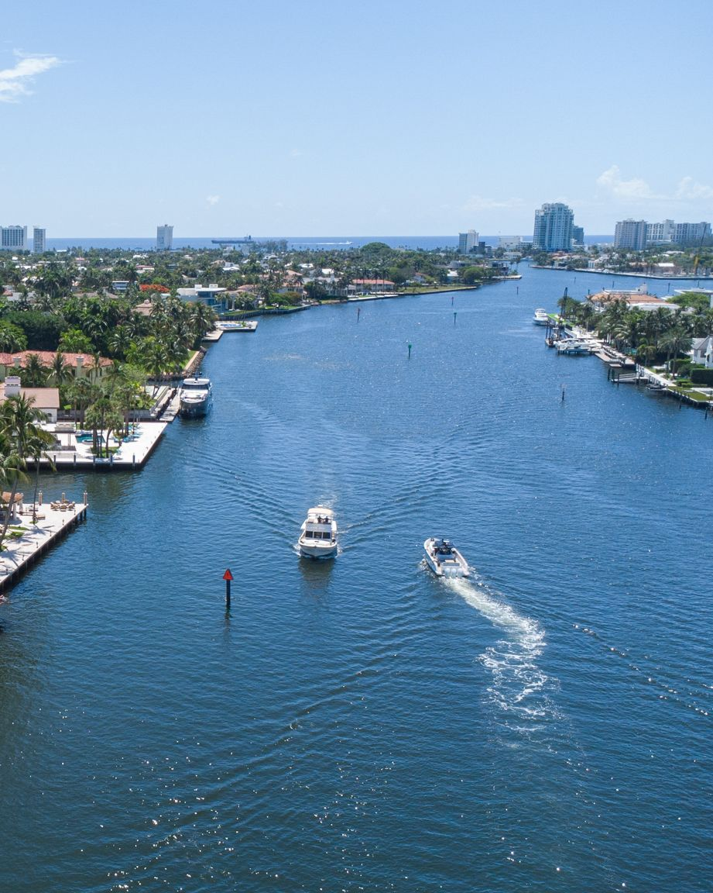

Step 2
Fixed vs. Bascule
The waterway matters more than the neighborhood name.
- Fixed Bridge
- One clearance. If you don't fit at high tide, the house doesn't work.
- Bascule
- Opens on schedule. Costs time, never eligibility.
- New River Rail
- Rests open, closes for trains. 4 ft closed.
- Coral Ridge
- Intracoastal canals: no fixed bridges. Middle River: fixed bridges.
- Schedules
- Set in 33 CFR 117. Check the Local Notice to Mariners.